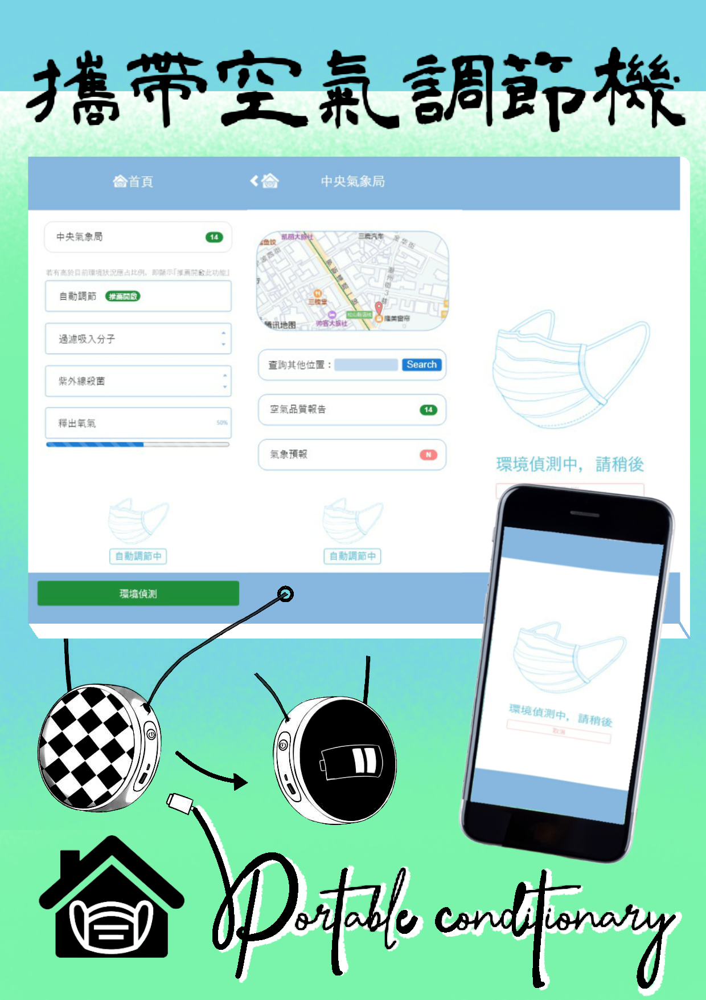

吳奕萱
電話: 0970-762-768
信箱: a1851a111113@gmail.com
·技能(程式語言)
HTML & CSS
(IDE:Sublime Text3、Visual studio code)
PHP
(IDE:Sublime Text3)
Java
(IDE:Eclipse)
C
(IDE:Dev-C++)
Visual Basic
(IDE:Visual Studio 2015)
·學歷
108年9月~110年2月
中華大學 資訊管理學系
110年2月~至今
輔仁大學 統計資訊學系三年級 在學中 (暑假升大四)
·競賽
參與育秀盃 軟體應用類、工業設計類
(擔任隊長，負責進度安排、工作協調等)

相關海報
相關影片
·自傳
過去每當遇到一個新的挑戰，總會獨自花費大量的時間去探討、研究、查詢等，
以找出適當的解決方法，來獲得極大的成就感及滿足感，而也因為這樣平常便會主動探索、學習不同領域。
而自大學之後，便深刻體驗到團體的重要，畢竟一個人難以於有限的時間，完成任何較有內容的報告或專案。
於我大一、二時，與其他4個人於課堂一起完成幾個小專案，皆只能利用短短不到幾週的時間，彼此不斷構思、討論、設計、檢測等以完成作品。
於2020年參與育秀盃競賽時，領導共5人的團隊，針對此次疫情所帶來的不便，設計出有效改善的工具。
而在參與這些小專案的過程，讓我培養了溝通及更加嚴謹的自律能力。
然而在過去的小專案中，發現許多有關APP、網頁、系統等所涉及的執行結果並不完全合理，
因為大多數皆是用經驗法則來作決論，所以便對統計產生了很大的興趣，畢竟統計是一門收集、說明及分析資料的學科。
而在未來的職涯裡，渴望可以和更多的人合作，運用彼此不同的擅長領域，引發出更多不同的思考，創造出更多獨特的產品，或是改造更多工具。
感謝您撥空閱讀我的履歷自傳，期盼有機會與您進一步面談，謝謝。